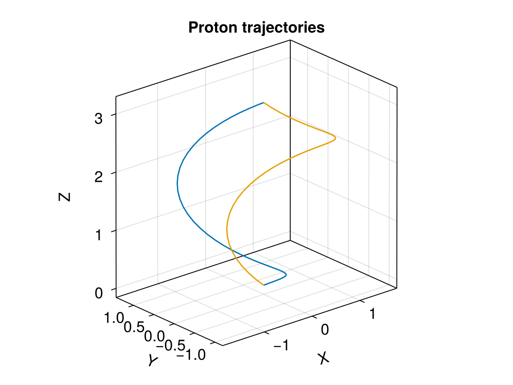

Ensemble tracing with extra saving


This example demonstrates tracing multiple protons in an analytic E field and numerical B field. See Demo: single tracing with additional diagnostics for explaining the unit conversion. Also check Demo: Ensemble for basic usages of the ensemble problem.
The output_func argument can be used to change saving outputs. It works as a reduction function, but here we demonstrate how to add additional outputs. Besides the regular outputs, we also save the magnetic field along the trajectory, together with the parallel velocity.
using TestParticle
using TestParticle: qᵢ, mᵢ
using OrdinaryDiffEq
using StaticArrays
using Statistics
using LinearAlgebra: normalize, ×, ⋅
using Random
using CairoMakie
seed = 1 # seed for random number
Random.seed!(seed)
"Set initial state for EnsembleProblem."
function prob_func(prob, i, repeat)
B0 = prob.p[3](prob.u0)
B0 = normalize(B0)
Bperp1 = SA[0.0, -B0[3], B0[2]] |> normalize
Bperp2 = B0 × Bperp1 |> normalize
# initial azimuthal angle
ϕ = 2π*rand()
# initial pitch angle
θ = acos(0.5)
sinϕ, cosϕ = sincos(ϕ)
u = @. (B0*cos(θ) + Bperp1*(sin(θ)*cosϕ) + Bperp2*(sin(θ)*sinϕ)) * U₀
prob = @views remake(prob; u0=[prob.u0[1:3]..., u...])
end
function getmeanB(B)
B₀sum = eltype(B)(0)
for k in axes(B, 4), j in axes(B, 3), i in axes(B, 2)
B₀sum += B[1,i,j,k]^2 + B[2,i,j,k]^2 + B[3,i,j,k]^2
end
sqrt(B₀sum / prod(size(B)[2:4]))
end
# Number of cells for the field along each dimension
nx, ny, nz = 4, 6, 8
# Spatial coordinates given in customized units
x = range(0, 1, length=nx)
y = range(0, 1, length=ny)
z = range(0, 1, length=nz)
# Numerical magnetic field given in customized units
B = Array{Float32, 4}(undef, 3, nx, ny, nz)
B[1,:,:,:] .= 0.0
B[2,:,:,:] .= 0.0
B[3,:,:,:] .= 2.0
# Reference values for unit conversions between the customized and dimensionless units
const B₀ = getmeanB(B)
const U₀ = 1.0
const l₀ = 2*nx
const t₀ = l₀ / U₀
const E₀ = U₀ * B₀;Convert from customized to default dimensionless units
# Dimensionless spatial extents [l₀]
x /= l₀
y /= l₀
z /= l₀
# For full EM problems, the normalization of E and B should be done separately.
B ./= B₀
E(x) = SA[0.0/E₀, 0.0/E₀, 0.0/E₀]
# By default User type assumes q=1, m=1
# bc=2 uses periodic boundary conditions
param = prepare(x, y, z, E, B; species=User, bc=2)
# Initial condition
stateinit = let
x0 = [0.0, 0.0, 0.0] # initial position [l₀]
u0 = [1.0, 0.0, 0.0] # initial velocity [v₀]
[x0..., u0...]
end
# Time span
tspan = (0.0, 2π) # one averaged gyroperiod based on B₀
saveat = tspan[2] / 40 # save interval
prob = ODEProblem(trace_normalized!, stateinit, tspan, param)
"Set customized outputs for the ensemble problem."
function output_func(sol, i)
getB = sol.prob.p[3]
b = getB.(sol.u)
μ = [@views b[i] ⋅ sol[4:6, i] / sqrt(sum(x -> x^2, b[i])) for i in eachindex(sol)]
(sol.u, b, μ), false
end
# Number of trajectories
trajectories = 2
ensemble_prob = EnsembleProblem(prob; prob_func, output_func, safetycopy=false)
sols = solve(ensemble_prob, Vern9(), EnsembleThreads(); trajectories, saveat);Visualization
f = Figure(fontsize = 18)
ax = Axis3(f[1, 1],
title = "Proton trajectories",
xlabel = "X",
ylabel = "Y",
zlabel = "Z",
aspect = :data,
)
for i in eachindex(sols)
xp = [s[1] for s in sols[i][1]]
yp = [s[2] for s in sols[i][1]]
zp = [s[3] for s in sols[i][1]]
lines!(ax, xp, yp, zp, label="$i")
end

This page was generated using DemoCards.jl and Literate.jl.